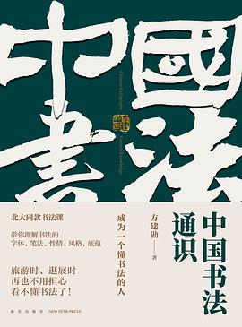

《中国书法通识》

总体观点
书法不仅是中国汉字的优美书写，更是中国人以软毫毛笔在宣纸上记录生命心跳、情绪起伏与宇宙气韵的至高纯粹抽象视觉艺术。
汉字的点画线条具有‘有生命的骨血肉’：通过中锋运笔的提按起伏、迟涩疾徐，墨色在纸张上的枯湿浓淡，书法家将内在人格与自然万物神韵凝固于黑白之间。
欣赏书法必须超越单纯的‘字写得工不工整’的初级偏见：唯有读懂字里行间的险绝与呼应、通篇章法的空白呼吸，以及书写者在特定历史时空的心灵呐喊，方能领悟书法之大美。
核心观点
-
1. 书法是线条的舞蹈：一根毛笔线条蕴含着提按、顿挫与骨力
西洋绘画靠光影与色彩堆叠，而中国书法全凭一根单色墨线，通过毛笔笔毫的弯曲与弹跳，展现出如太极般的刚柔相济。
王羲之《兰亭序》中的‘二十个之字’各不相同，有的如春风拂柳轻盈飘逸，有的如磐石坠地沉凝端重，线条极尽千变万化。 -
2. ‘中锋行笔，锥画沙，印印泥’：中国传统笔法的力学奥秘
笔锋始终藏在点画中间，如同在沙盘中划出深痕、在软泥上留下印章，使线条圆浑饱满有立体感，绝非轻薄扁平的‘刷字’。
颜真卿楷书横细竖粗，起笔藏锋、收笔顿住如古柏老松盘根错节，展现出巍峨浩然正气与坚不可摧的大唐气象。 -
3. 五体演变史：不仅是字形的简化，更是人类心智从仪式走向抒情的解放
甲骨金文通神肃穆，小篆森严规整，隶书波磔如飞，楷书平稳端庄，而行草书则彻底成为文人宣泄胸中块垒的心灵心电图。
张旭草书‘肚痛帖’在腹痛难忍时信手挥洒，前几行尚能辨认，后数行如狂风骤雨笔走龙蛇，直接将肉体痛感化作纯粹抽象视觉狂欢。 -
4. ‘计白当黑’：空白不仅是无墨的纸张，更是书法作品呼吸的灵动空间
字与字之间的挪让、行与行之间的疏密，白色的底纸与黑色的墨痕互为表里，虚实相生才能产生幽深辽阔的意境。
杨凝式《韭花帖》字距极疏、行距极阔，通篇白纸如雪，零星字迹如春日落花漂浮在清波之上，展现出不可企及的高迈禅意。 -
5. ‘天下三大行书’：至高杰作皆诞生于悲痛欲绝与无心作字之时
真正的神品绝非在明窗净几前刻意描摹出来的，而是在书写者沉浸于至情至性的绝境中，心手双畅、真情流淌的瞬间定格。
颜真卿《祭侄文稿》在悼念侄儿季明遭安禄山叛军惨烈杀害时写就，涂抹斑斑、枯笔飞白、字迹越写越狂放，泪水与墨水混融。 -
6. ‘字如其人’：书法的终极归宿不是纯粹炫技，而是书写者人格风骨的投射
古人讲‘作字先作人，心正则笔正’，赵孟頫书法虽极精熟却因降元仕进常遭后世挑剔，而傅山力主‘宁拙毋巧，宁丑毋媚’展现遗民傲骨。
苏轼《黄州寒食诗帖》字形欹侧自出新意，自嘲‘我书意造本无法，点画信手烦推求’，字里行间全是在黄州谪居苦难中的旷达解脱。
全书结构
-
序言与引言：如何欣赏一幅书法作品
破除大众对书法“看不懂”的畏难心理，确立“六度书法审美体系”，指导读者如何从第一眼视觉感受切入，通过线条、空间与墨色读懂中国书法的生命律动。
欣赏书法的基本误区（以认字代替审美）；线条的生命感与呼吸感；书法作为中国文化核心的核心意象。 -
第一章 书体——如何欣赏不同书体的美
系统梳理汉字演进脉络中五大核心书体（篆、隶、草、行、楷）的形态特征与审美特质，解析从甲骨文的天真烂漫到楷书的理性庄严。
甲骨文孩童期的天真烂漫；秦篆线条的纯粹圆融；汉隶“蚕头燕尾”中横画的波磔之美；草书如疾风暴雨的律动冲击；行书如行云流水的灵动；唐楷的法度与力量之美。 -
第二章 笔墨——如何用专业语言品评书法
深入书法本体语言的核心要素：笔法（藏露、起收、提按、方圆）、点画（点线面的空间营构）、结字（重心与中和奇险）、章法（气韵贯通与行气）与墨法（五色墨韵）。
怎么写比写什么更重要；点画中的“锥画沙”与“屋漏痕”；结字的中正平衡与欹侧险绝；墨分五色（浓淡干湿焦）构筑的立体层次。 -
第三章 性情——如何感受书写者的个性与情绪
深入探讨“字如其人”与“书为心画”的艺术命题，通过剖析历代六位书法巨匠的代表名作，展现个人的家国命运与情绪波动如何在笔端淋漓流淌。
王羲之《兰亭序》将多情细腻与人生感慨融于笔端；欧阳询险劲冷峻的风格成因；张旭狂草在醉态与草法边缘的极限试探；颜真卿《祭侄文稿》悲愤交加涂涂改改下的“天下第二行书”；苏轼《黄州寒食诗帖》潇洒旷达与自嘲。 -
第四章 书写——如何进入真实的创作过程
从书写工具（文房四宝笔墨纸砚）、执笔运笔的手部力学机制，到临帖方法与创作转换，为读者提供由眼入手的实践进阶路径。
执笔无定法与指实掌虚的力学原理；运笔过程中的节奏、顿挫与发力点；读帖、摹帖与临帖三步法；从集字创作走向自主创作的蜕变。 -
第五章 观念——如何领会书法背后的东方哲学
揭示中国书法艺术背后深厚的中国传统哲学底色：阴阳刚柔之变、计白当黑的空间虚实哲学、法度与自由的辩证统一，以及人与自然的道法自然。
“计白当黑”对虚实留白的高级把控；八卦阴阳理论在笔势开合中的体现；禅宗顿悟与庄子游心在文人书法中的投射。 -
第六章 再造——如何在继承传统中实现风格创新
探讨书法史上历代大师如何面对“传统”这座高山：从魏晋到唐宋、从元明到清代金石碑学的演变规律，阐明“通变”与“再造”的创新法则。
赵孟頫提出“用笔千古不易”与复古求变；董其昌以淡雅疏简反叛庸俗；清代邓石如、包世臣推崇碑学打破帖学垄断；当代书法在现代展厅空间中的再造与思考。